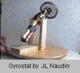
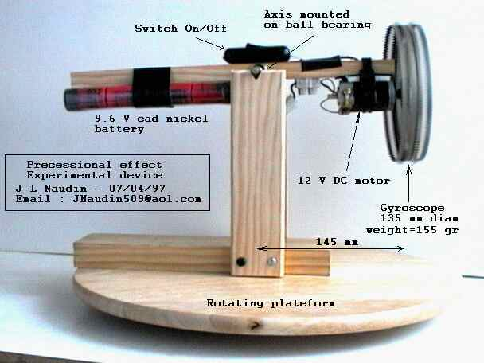
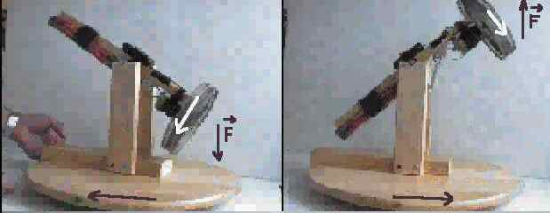
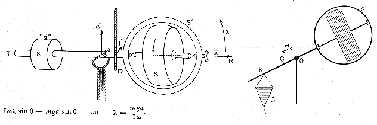

The Gyrostatic Precession Experiment
by Jean-Louis Naudin
created on July 7, 1999 - JLN
Labs - Last update December 7, 2003
Toutes les
informations et schémas sont publiés gratuitement ( freeware )
et sont destinés à un usage personnel et non commercial
All informations and
diagrams are published freely (freeware) and are intended for a private use and a non commercial
use.


I have build a experimental device for testing this effect and it seems very promising, I have used a gyro (135 mm diam./155 gr weight) fixed on a 145 mm arm length (with ball bearing), and the gyrostat apparatus mounted on a rotating base.
The precession effect is very impressive, when you push gently the rotating base the gyro apparatus goes upward very fast. In this case the gyro turn clockwise, the rotating base turn counter clockwise.

The angular velocity of the arm may be calculated :
V = ( M g A) / ( I Omega )
V : angular velocity of the arm (rad/sec)
M : mass in kg of the gyro ( kg )
A : distance between the center gravity and the axis of the arm (
m )
I : Inertial momentum ( in this case about I = M R^2 ) ( for a
cavern cylinder )
R : Radius of the gyro wheel ( m )
Omega : angular velocity of the gyro ( rad/sec )
This is just simple physic (nothing weird), but this is interesting to study and explore........
See the RealVideo of the Gyrostat expriment (83kb)
( if you don't have the RealPlayer 5.0, you may download it freely at : http://www.real.com/products/player/ )
It is possible to tap free energy from the precession movement induced by the rotation of the earth, or to produce a thrust by using an asymmetrical precession effect...
See also the patents :
See also :
Return to Inertial Propulsion page